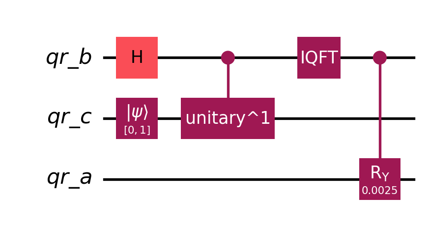
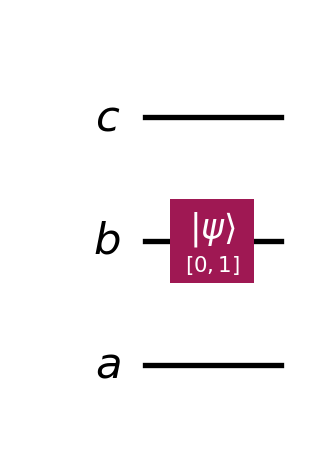

Code
N_b = 2 # number of variables (b.shape[0])
n_b = int(np.log2(N_b)) # number of qubits in b-register
# n_b = 1 # N_b = 2^(n_b), n_b = np.log2(N_b)
n_c = 1 # number of qubits in c-register
N_c = 2 # N_c = 2^(n_c)
t = np.pi/8
C = 0.01This document provides a step-by-step implementation of the HHL algorithm using Qiskit. The algorithm is broken into four key phases:
\(A=\begin{bmatrix}1 & -\frac{1}{3}\\-\frac{1}{3} & 1\end{bmatrix}\)
\(\vec{b}=\begin{bmatrix}0\\1\end{bmatrix}\)
\(n_b\): # of qubits in b-register
\(N_b=2^{n_b}\): # of unknows (length of \(\vec{b}\), \(len(\vec{b})=len(\vec{x})\))
\(n_c\): # of qubits in c-register
a larger \(n_c\) results in higher accuracy when the encoding is not exact
\(N=2^n\)
\(t=\frac{\pi}{8}\): time variable, should be multiple of \(2\pi\)
\(C=0.01\): a constant to pick, try to make \(C\) as large as possible while \(-1\leq\frac{C}{\tilde{\lambda_j}} \leq 1\)
N_b = 2 # number of variables (b.shape[0])
n_b = int(np.log2(N_b)) # number of qubits in b-register
# n_b = 1 # N_b = 2^(n_b), n_b = np.log2(N_b)
n_c = 1 # number of qubits in c-register
N_c = 2 # N_c = 2^(n_c)
t = np.pi/8
C = 0.01The Goal for this phase is to rotate the Acilla Qubit (register-a) based on the encoded eigenvalues in the c-register.
# prepare the previous steps
mat_A = np.array([[1, -1/3], [-1/3, 1]])
vec_b = np.array([0,1])
psi_1, qr_b, qr_c, qr_a = state_prep(mat_A, vec_b, n_c=1)
psi_4 = phase_estimation(psi_1, qr_b, qr_c, mat_A, t)Begin with \(|\psi_4\rangle\): \[
|\psi_4\rangle=\sum\limits^{2^{n_b}-1}_{j=0}b_j|u_j\rangle|\tilde{\lambda_j}\rangle|0\rangle_a
\] The next step is to rotate the ancilla qubit, \(|0\rangle_a\), based on the encoded eigenvalues in the c-register. Such that \(\frac{1}{\lambda_j}\) is encoded in a-register.
After apply the Control-Y rotation (\(CR_y\) Gate), we got \(|\psi_5\rangle\) \[ |\psi_5\rangle=\sum\limits^{2^{n_b}-1}_{j=0}b_j|u_j\rangle|\tilde{\lambda_j}\rangle\left(\sqrt{1-\frac{C^2}{\tilde{\lambda_j}^2}}|0\rangle_a+\frac{C}{\tilde{\lambda_j}}|1\rangle_a\right) \]
Therefore \(\psi_4\xrightarrow{CR_y(\theta_j)}\psi_5\)
\[
CR_y(\theta_j)|c\rangle|0\rangle_a=\begin{cases}|c\rangle\left(\cos\frac{\theta_j}{2}|0\rangle_a+\sin\frac{\theta_j}{2}|1\rangle_a\right)&|c\rangle=|1\rangle\\|c\rangle|0\rangle_a&|c\rangle=|0\rangle\end{cases}
\] Using the qubits in c-register as control qubits. (rotate if \(|1\rangle\), do nothing if \(|0\rangle\))
The rotated angle is \(\theta_j=2\arcsin\left(\frac{C}{\tilde{\lambda_j}}\right)\)
The \(R_y(\theta)\) Gate is: \[ R_y(\theta)=e^{-i\frac{\theta}{2}Y}=\cos\frac{\theta}{2}I-i\sin\frac{\theta}{2}Y=\begin{bmatrix}\cos\frac{\theta}{2}&-\sin\frac{\theta}{2}\\\sin\frac{\theta}{2}&\cos\frac{\theta}{2}\end{bmatrix} \] Therefore, \(R_y(\theta)|0\rangle_a=\cos\frac{\theta}{2}|0\rangle_a+\sin\frac{\theta}{2}|1\rangle_a\)
The reason why \(\theta_j=2\arcsin\left(\frac{C}{\tilde{\lambda_j}}\right)\): What we want to store in a-register is \(\sin\frac{\theta_j}{2}=\frac{C}{\tilde{\lambda_j}}\)
from Trigonometric, we know \(\cos^2(\alpha)+\sin^2(\alpha)=1\), therefore \(\cos(\alpha)=\sqrt{1-\sin^2(\alpha)}\):
for any angle \(\alpha\), where \(\alpha=\arcsin(x)\), means \(\sin(\alpha)=x\) (notice we have \(\theta_j=2\arcsin\left(\frac{C}{\tilde{\lambda_j}}\right)\), \(\sin\left(\frac{\theta_j}{2}\right)=\frac{C}{\tilde{\lambda_j}}\)) \[
\cos(\alpha)=\sqrt{1-\sin^2(\alpha)}=\sqrt{1-x^2}
\]
such that \(\cos\left(\frac{\theta_j}{2}\right)=\sqrt{1-\left(\frac{C}{\tilde{\lambda_j}}\right)^2}\)
Apply the rotation Gate and \(\sin\left(\frac{\theta_j}{2}\right)=\frac{C}{\tilde{\lambda_j}}\) and \(\cos\left(\frac{\theta_j}{2}\right)=\sqrt{1-\left(\frac{C}{\tilde{\lambda_j}}\right)^2}\)
\[ \begin{align} R_y(\theta_j)|0\rangle_a=\cos\frac{\theta_j}{2}|0\rangle_a+\sin\frac{\theta_j}{2}|1\rangle_a \\ \Downarrow~~~~~~~~~~~~~~~~~~~~~~~~~~~~~~~~~~~~\\ R_y(\theta_j)|0\rangle_a=\sqrt{1-\left(\frac{C}{\tilde{\lambda_j}}\right)^2}|0\rangle_a+\frac{C}{\tilde{\lambda_j}}|1\rangle_a \end{align} \]
实现思路 1. 遍历所有可能的二进制状态： - 对于 c-register 的 \(n_c\) 个量子比特，遍历所有可能的二进制状态 \(k\) (从 \(1\) 至 \(2^{n_c}-1\)) - 每个状态 \(k\) 对应一个 \(\phi=\frac{k}{2^{n_c}}\)，然后计算 \(\tilde{\lambda_j}=\frac{2\pi\phi}{t}\)。
使用多控制\(R_y\)门（RYGate.control(n_qubits)）实现受控旋转。
控制量子比特是 c-register 的量子比特，目标量子比特是 a-register 的辅助量子比特。
恢复状态：
c-register 的状态，以便处理下一个二进制状态。def controlled_rotation(qc, qr_c, qr_a, C, t, n_c):
"""
实现受控旋转门，作用于 a-register，基于 c-register 的相位估计结果
:param qc: 量子电路（需已经过相位估计到 |psi_4> 状态）
:param qr_c: c-register（存储相位估计结果）
:param qr_a: a-register（辅助比特）
:param C: 缩放常数
:param t: 时间参数（用于计算真实特征值）
:param n_c: c-register 的量子比特数
"""
# 遍历所有可能的相位估计结果 k（从1到2^n_c -1）
for k in range(1, 2**n_c):
# Step 1: 将二进制状态k转换为控制条件（设置X门）
# 保存需要翻转的量子比特索引
flip_qubits = []
for i in range(n_c):
if (k & (1 << i)) == 0: # 如果第i位是0，需要翻转
qc.x(qr_c[i])
flip_qubits.append(i)
# Step 2: 计算旋转角度 theta_j
# 计算相位 phi（注意处理补码）
phi = k / (2**n_c)
if k > 2**(n_c - 1):
phi -= 1.0 # 处理负相位（二进制补码）
# 计算真实特征值 lambda_j = (2π / t) * phi
lambda_j = (2 * np.pi / t) * phi
# 计算旋转角度 theta_j = 2*arcsin(C / lambda_j)
if abs(lambda_j) > 1e-8: # 避免除以零
theta_j = 2 * np.arcsin(C / lambda_j)
else:
theta_j = 0 # 若lambda_j太小，跳过旋转
# Step 3: 应用多控制 RY 门到 a-register
if abs(theta_j) > 1e-8: # 仅当角度有效时应用
ry_gate = RYGate(theta_j).control(num_ctrl_qubits=n_c, ctrl_state='1'*n_c)
qc.append(ry_gate, qr_c[:] + [qr_a[0]])
# Step 4: 恢复被翻转的量子比特
for i in flip_qubits:
qc.x(qr_c[i])
return qc
psi_5 = psi_4.copy()
psi_5 = controlled_rotation(psi_4, qr_c, qr_a, C=C, t=t, n_c=n_c)
psi_5.draw(output='mpl')
When the ancilla qubit is measured, the ancilla qubit wavefunction will collapse to either \(|0\rangle\) or \(|1\rangle\). If it is \(|0\rangle\), the result will be discarded and the computation will be repeated until the measurement is \(|1\rangle\). Therefore, the final wavefunction of interest is
The probability of getting \(|1\rangle_a\) is \(P_{|1\rangle_a}=\sum\limits^{2^{n_b}-1}_{j=0}\left|\frac{Cb_j}{\tilde{\lambda_j}}\right|^2\), therefore, \(\psi_6\) is: \[ |\psi_6\rangle=\frac{1}{\sqrt{\sum\limits^{2^{n_b}-1}_{j=0}|\frac{b_jC}{\tilde{\lambda_j}}|^2}}\sum\limits^{2^{n_b}-1}_{j=0}b_j|u_j\rangle|\tilde{\lambda_j}\rangle\frac{C}{\tilde{\lambda_j}}|1\rangle_a \]
a-registera-register is \(|1\rangle_a\).######## This takes too long to run, over 2 million loops
import sys
simulator = Aer.get_backend('statevector_simulator')
res = 0
countloop = 0
while (res<1):
psi_5 = psi_4.copy()
psi_5 = controlled_rotation(psi_5, qr_c, qr_a, C=C, t=t, n_c=n_c)
psi_6 = psi_5.copy()
cr = ClassicalRegister(2, 'cr_1')
psi_6.add_register(cr)
psi_6.measure(qr_a[0], cr[0])
transpiled_circuit = transpile(psi_6, simulator)
result = simulator.run(transpiled_circuit, shots=1).result()
counts = result.get_counts(transpiled_circuit)
countloop += 1
sys.stdout.write(f'\r循环 {countloop} 次') # `\r` 覆盖前一行
sys.stdout.flush() # 立即刷新输出
if '1' in counts:
res = 1
psi_6.draw(output='mpl')In order to eliminate the possibility of \(|0\rangle_a\). We are using control-Z gate and Grover Reflect gate here for Amplitude Amplification.
Control-Z Gate: Flip the \(|0\rangle_a\) (). But this gate does not change the amplitude. \(Z|0\rangle_a=-|0\rangle_a\) and \(Z|1\rangle_a=|1\rangle_a\). Therefore, \(|\psi_5\rangle\) becomes: \[ |\psi_5'\rangle=\sum\limits^{2^{n_b}-1}_{j=0}b_j|u_j\rangle|\tilde{\lambda_j}\rangle\left(-\sqrt{1-\frac{C^2}{\tilde{\lambda_j}^2}}|0\rangle_a+\frac{C}{\tilde{\lambda_j}}|1\rangle_a\right) \]
Grover Gate \(U_{\psi_5}=2|\psi_5\rangle\langle\psi_5|-I\) \(U_{\psi_5}=HR_y(-2\theta)H\) A reverse rotation with angle is \(-2\theta\) \(\text{Gover iteration time }\approx\frac{\pi}{4}\sqrt{N}\), notice \(N=2^{n_c}\)
psi_6 = psi_5.copy()
# Step 1: 先应用 Controlled-Z
psi_6.h(qr_a)
mcz_gate = MCXGate(num_ctrl_qubits=n_c, ctrl_state='1' * n_c)
psi_6.append(mcz_gate, qr_c[:] + [qr_a[0]])
psi_6.h(qr_a)
# Step 2: Grover Diffusion Operator (放大 |1⟩_a)
num_iterations = 3 # 迭代 3 次
for _ in range(num_iterations):
# 1. 先对 `a-register` 施加 X，使 `|0⟩_a` 变 `|1⟩_a`
psi_6.x(qr_a)
# 2. H → Controlled-Z → H 实现均值反射
psi_6.h(qr_a)
psi_6.append(mcz_gate, qr_c[:] + [qr_a[0]]) # 再次施加 Controlled-Z
psi_6.h(qr_a)
# 3. 再次应用 X 恢复原态
psi_6.x(qr_a)
psi_6.draw(output='mpl')from qiskit.quantum_info import Statevector
simulator = Aer.get_backend('statevector_simulator')
# 复制 psi_5
psi_6 = psi_5.copy()
# 添加 classical register 以测量 a-register
# cr = ClassicalRegister(2, 'cr_a')
# psi_6.add_register(cr)
# 仅测量 a-register
# psi_6.measure(qr_a[0], cr[0])
# 运行量子电路
statevector = Statevector.from_instruction(psi_6)
amplitudes = statevector.probabilities_dict()
# **Post-selection: 仅保留 |1⟩_a**
filtered_amplitudes = {k: v for k, v in amplitudes.items() if k[-1] == '1'}
# 归一化，使总概率变成 1
total_prob = sum(filtered_amplitudes.values())
normalized_amplitudes = {k: v / total_prob for k, v in filtered_amplitudes.items()}
# 输出 post-selection 结果
print("仅保留 |1⟩_a 的状态:")
for state, prob in normalized_amplitudes.items():
print(f"State {state}: {prob:.6f}")
# 重新构造 psi_6，使其 **只包含 |1⟩_a**
psi_6 = Statevector(normalized_amplitudes)
# 继续使用 psi_6 进行 ψ_7 → ψ_9 计算
psi_6.draw(output='mpl')The sequence of measure and uncompute does not matter. We can postpone the measure and discard step to the end.
psi_6 = psi_5
psi_6.draw(output='mpl')
def controlled_rotation(qc, qr_c, qr_a, C, t, n_c):
"""
实现受控旋转门，作用于 a-register，基于 c-register 的相位估计结果
:param qc: 量子电路（需已经过相位估计到 |psi_4> 状态）
:param qr_c: c-register（存储相位估计结果）
:param qr_a: a-register（辅助比特）
:param C: 缩放常数
:param t: 时间参数（用于计算真实特征值）
:param n_c: c-register 的量子比特数
"""
# 遍历所有可能的相位估计结果 k（从1到2^n_c -1）
for k in range(1, 2**n_c):
# Step 1: 将二进制状态k转换为控制条件（设置X门）
# 保存需要翻转的量子比特索引
flip_qubits = []
for i in range(n_c):
if (k & (1 << i)) == 0: # 如果第i位是0，需要翻转
qc.x(qr_c[i])
flip_qubits.append(i)
# Step 2: 计算旋转角度 theta_j
# 计算相位 phi（注意处理补码）
phi = k / (2**n_c)
if k > 2**(n_c - 1):
phi -= 1.0 # 处理负相位（二进制补码）
# 计算真实特征值 lambda_j = (2π / t) * phi
lambda_j = (2 * np.pi / t) * phi
# 计算旋转角度 theta_j = 2*arcsin(C / lambda_j)
if abs(lambda_j) > 1e-8: # 避免除以零
theta_j = 2 * np.arcsin(C / lambda_j)
else:
theta_j = 0 # 若lambda_j太小，跳过旋转
# Step 3: 应用多控制 RY 门到 a-register
if abs(theta_j) > 1e-8: # 仅当角度有效时应用
ry_gate = RYGate(theta_j).control(num_ctrl_qubits=n_c, ctrl_state='1'*n_c)
qc.append(ry_gate, qr_c[:] + [qr_a[0]])
# Step 4: 恢复被翻转的量子比特
for i in flip_qubits:
qc.x(qr_c[i])
return qc
mat_A = np.array([[1, -1/3], [-1/3, 1]])
vec_b = np.array([0,1])
t = np.pi/8
psi_1, qr_b, qr_c, qr_a = state_prep(mat_A, vec_b, n_c=1)
psi_4 = phase_estimation(psi_1, qr_b, qr_c, mat_A, t)
psi_6 = controlled_rotation(psi_4, qr_c, qr_a, C=C, t=t, n_c=n_c)
psi_6.draw(output='mpl')
prev Quantum Phase Estimation
next is Uncomputation